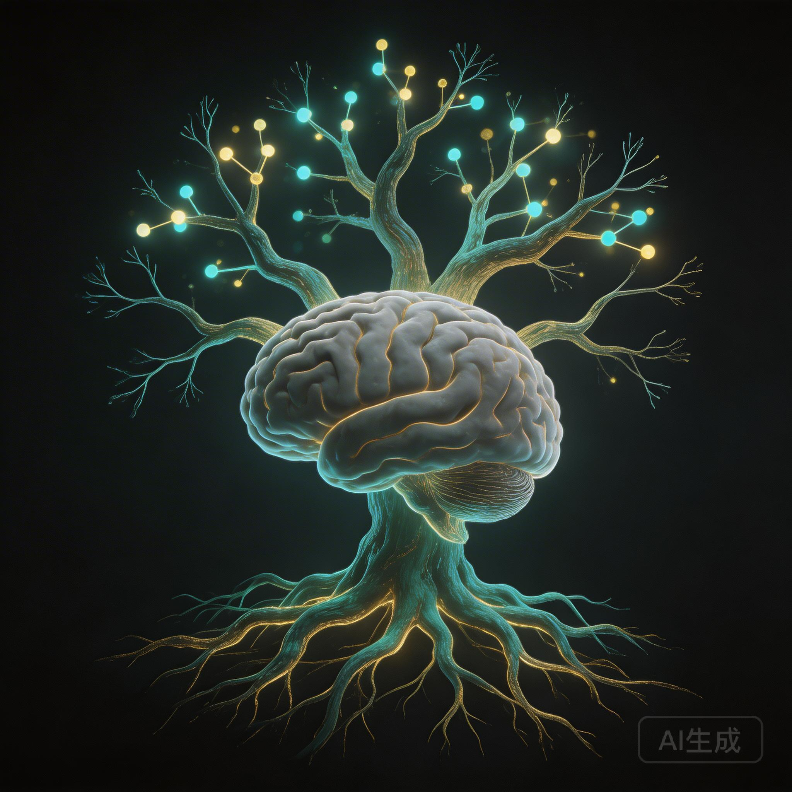
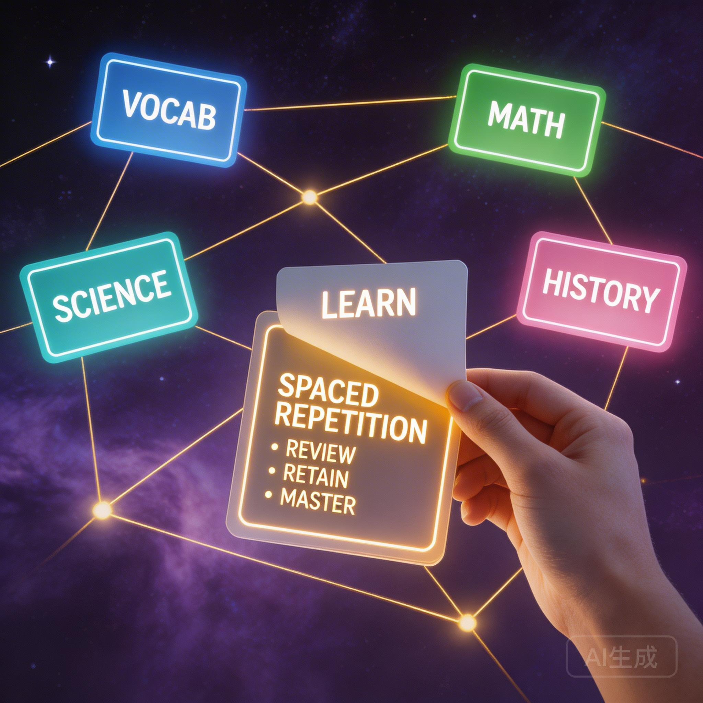

摇摇刚落地重庆。飞机延误，八点半才出机场。公司安排拼房住，室友是谁还不知道 — 「开盲盒」，到16号都是跟人拼。
怕开会吵到未知室友，他选择先去公司。深夜的办公室只有他一个人，打开电脑连上会议 — 这是一场从三座城市同时接入的对话。
「我在重庆的公司里，因为我出机场已经八点快半了，我担心回酒店拼屋睡吵到人，我就先来公司了。」
与此同时，白豆刚到家、刚写完周报。李墨玩在北方吐槽柳絮。三个人，三座城，同一个深夜时间窗口。
摇摇来重庆不是出差，是负责整个大部门的AI数字化业务。公司要开设三级部门，他是最有可能坐上那个位置的人。
但他心里忐忑。干好了，同事的工作量缩减，人会被优化掉 — 白眼相向。干不好，机会转瞬即逝。
「干好了会导致其他同事的工作量缩减，然后就会优化一些人。人家会白眼相向，你知道吗？」
好消息是：不管工作上研不研究，这些东西都要了解。现在还有人付钱让你研究。摇摇说他现在原先的活都不怎么干了，每天就在公司看 Claude 的博客。
这是摇摇今晚最想聊的主题。起因是上周有人问他：「什么是 Skill？」
他发现自己仿佛知道，但说不清楚。不是因为 Skill 复杂，而是这种「知道」从一开始就是虚的。
「知识变得非常易得，你刷过一下之后，它就是只从大脑的浅表流过去了，留下几个标签词 — Harness、Agent、Skill。我都知道，但你让我现在讲什么是 Harness，我很难讲出来。」
他在登机口写下了这些反思 — 那种在机场啪啪敲键盘的精英感，和内容的空洞形成了讽刺的对比。
因为知识易得 → 只停留在关键词层面 → 对外讲述时别人觉得你懂 → 正反馈闭环 → 没有动力深入 → 下次继续停留在关键词层面
这个东西成立的前提是什么？和相近概念的区别？它的边界条件？— 这些追问从来没有发生过
信息摄入量巨大，但从不输出。根据记忆曲线三五天就遗忘，你甚至开始是看懂的，过了一段时间就讲不出来了
「我很享受在别人面前表现出我知道的形象。和 AI 聊一轮，大概知道框架走势，就拿出去讲。因为是新东西你比别人多一点点，就会留下那个印象。然后 — 停步于此。」
「整个人就像小时候学的那种 — 墙头芦苇，头重脚轻根底浅。」

摇摇和李墨玩展开了一场深入的讨论。学东西快的人，一定有自己的知识框架。
关键区分：用具象的事情解释抽象概念 = 言之有物。只停留在抽象概念上 = 别人觉得你在忽悠。而具象化能力来自实践 — 偏实践类的东西你不去实践，表述就只能停留在框架和概念层面。
白豆分享了一次成功的概念解释经验。一位英语老师朋友问他什么是 Agent。
「Agent 是有 Agency 的 AI。当这个 AI 不只是在对话框里回答问题，而是理解你的意图，有主动性，甚至作为一个机构去带领你调用别的工具帮你完成任务。」
白豆由此提出了一个新的机制：每周一次「名词解释」环节。每人针对核心概念讲一遍，其他人追问。不是当场搞明白，而是带着真实问题去实践，下周再来聊。
李墨玩上周「稀里糊涂」注册了营业执照。本来只是为了小红书接支付 — 支付宝费率只有 0.6%，中转平台要 1%-3%。
结果发现注册过程比想象简单得多：清明节申请，第二天审批，第三天终审完成。淘宝上代注册一两百，其实分分钟自己搞定 — 又是一个信息差。
「我发现没想到这个市场这么大。好多公司在做 AI 一键排版，而且都是收费的。最贵的一个月25块多，一半是一年189。」
他的公众号排版 Skill 已经成型：每次排完版自动生成个人品牌区 — 公众号、小红书、关于作者。学的是花叔 — 每个仓库底下都放自己的社交链接。
白豆这周没有更新周报 — 下午在帮朋友做 AI 作品集，回来后又预估错时间了。
但他分享了两个有意思的实践：
「I do not touch my phone in the morning because it messes my mind up. — 当我说出来这句话的时候，我真的就不想再去碰手机了。」
关键要素：用自己的声音说出来，用另一种语言，有明确的后果描述。李笑来戒烟时用的是：「I do not smoke because it stinks.」
另一个实践：帮朋友做 HTML 作品集。一个简单的页面，有 TOC、经历陈列、可点击展开 — 大家会觉得「很不一样」。白豆发现：做跟朋友相关的、能帮到他的东西，会让对方对 AI 的兴趣一下子提升。

这是本期的 live demo 环节。白豆打开 Claude Code，现场演示：一句话指令 → 访问 Claude 官方博客 → 提取核心概念 → 自动生成 50 张 Anki 卡片。
在 Anki 客户端安装桥接插件，让 Claude Code 能通过 API 直接写入卡片
「你是小白，想了解 AI 基础概念。去访问 Claude 博客，提取30个核心概念，建立一个叫'AI学习'的牌组，生成50张正反卡片。」
卡片可以嵌套折叠层级 — 正面问题、反面精简解释、折叠层放类比和例子，本质就是 HTML
内容是数据，样式是模板。改界面不用重新生成所有内容，不炸 Token
「一两周可能没有太大明显。一两年之后，你看到那个概念的时候，会有一种真的就是由你知道的感觉 — 不是查过所以知道，而是知识蒸馏成了直觉。」
白豆还引用了 B 站 UP 主「Y dango 建构」的理论：人类文明大爆发的两个条件 — 多元的元素 + 元素之间紧密的联系。Anki 在个人层面做的就是这件事：经历、触动、知识都放进去，频繁复习让它们联系越来越紧，直到你能导一出好戏 — 因为所有演员都在舞台上等着你。
方法一：念全称
记 Linux 命令最好的方式 — 每次用的时候把全称念出来。
方法二：问「为什么叫这个」
白豆的习惯：看到任何术语，问 AI 为什么叫这个名字。grep 是 Global Regular Expression Print，URL 是 Uniform Resource Locator。Cloudflare 叫 R2，阿里云叫 OSS，AWS 叫 S3 — 本质都一样，起不同名字一是造词卖贵，二是体现公司文化。
「我会特别好奇地问 AI：你这个命令啥意思？为什么叫这个单词？背后有什么故事？然后会发现很多还挺有趣的。」
AI 时代知识太容易获得，最危险的不是无知，而是「你以为你懂」。知道关键词、知道大概结论、从别人那里拿到正反馈 — 然后停步于此。
学东西快的人有自己的知识框架。新知识来了知道往哪放、和已有知识怎么连接。没有框架，每个概念都是孤岛。
能用具体例子解释抽象概念，说明你真的内化了。「Agent 是有 Agency 的 AI」「大模型是缸中之脑」— 一句话让外行恍然大悟。
Claude Code + AnkiConnect 打通：一句话生成 50 张卡片。复习一两年后，知识不再是查过所以知道，而是成为直觉。
AI 数字化是新赛道，有先发优势就先抢过来。不管研不研究，这些东西都要了解 — 现在还有人付钱让你研究，这是最好的局面。
用自己的声音、用另一种语言、有明确后果地说出行为宣言。「I do not touch my phone in the morning because it messes my mind up.」— 说出来的那一刻，行为就变了。
会议结束时，摇摇说要等白豆发来 AnkiConnect 的安装方法再回酒店 — 「我就在公司弄好了再回去」。
下周预告：李墨玩请喝蜜雪冰城，以及新机制「名词解释」首次开启 — 每人准备一个核心概念，提前发群，其他人负责追问。
「感觉每次都很有收获。」
也真的要用一用。今天一定用起来，感受很不一样的。
— 白豆，对摇摇说